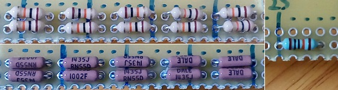
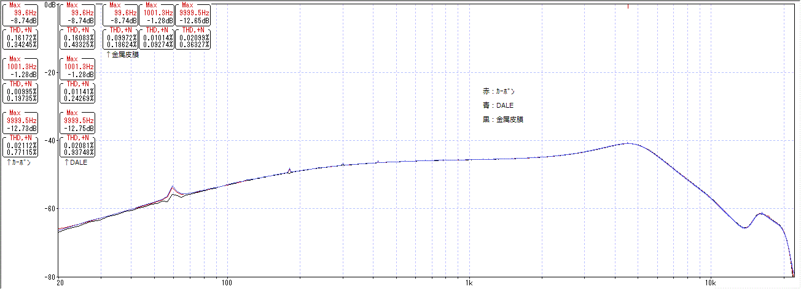
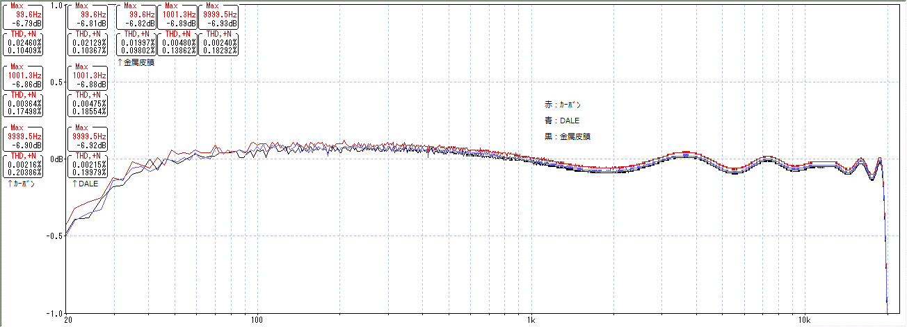

抵抗器の種類で音は変わるのか
2016年12月20日 カテゴリー：○○で音は変わるのか
※他の測定でわかった通り、歪率や周波数特性の測定はあまり意味がない気がしますが、失敗例として記事にしていこうと思います。音の変化には歪率や周波数特性以外の何らかの特性が関係していて、それは結局自分の耳で確かめるしかないのだろうと思います。
以下の3種類の抵抗を通した場合の歪率・周波数特性を測定します。音量が下がってしまうため、PC録音ボリュームを適宜上げています。外来ノイズが多いため抵抗本体のノイズは測定できません。

写真左上：秋月電子 1/4W炭素皮膜（カーボン）抵抗（100本100円） 10kΩ×10個直列 実測値99.9kΩ
写真左下：DALE RN-55 1/4W金属皮膜抵抗（100本3000円） 10kΩ×10個直列 実測値100.2kΩ
写真右：共立電子 1/4W金属皮膜抵抗（100本200円） 100kΩ×1個 実測値100.3kΩ
▽結果1 擬似ギター出力を使った場合

金属皮膜抵抗1個の場合は配線の距離が短くなるため、ノイズが少なめになります。
▽結果2 PC出力を使った場合 ※±1dBまで拡大

ノイズの影響を受けやすいため、周波数特性は平均値のデータになっています。抵抗値が若干違うせいか少しズレがありますが、特性自体は同じなようです。